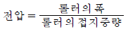
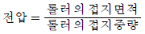
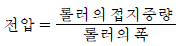
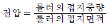
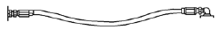
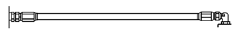
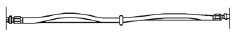
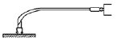

건설기계정비기능사 (2010-03-28 기출문제)
1과목: 건설기계정비(임의구분)
1. 정비작업 중 갑자기 전조등이 꺼졌을 경우와 관계가 없는 것은?
- 퓨즈의 단선
- 배선의 접촉 불량
- 축전지 용량 과다
- 필라멘트 단선
(정답률: 92%)

2. 배터리의 충전은 어떤 작용을 이용한 것인가?
- 전기적 작용
- 화학적 작용
- 기계적 작용
- 물리적 작용
(정답률: 78%)
3. 그로울러 시험기로 전기자 위에 철편을 놓고 천천히 회전시켰더니 흡입 또는 진동을 하였을 때는?
- 단선
- 단락
- 접지 불량
- 고저항 발생
(정답률: 49%)
4. 에어컨 장치에서 컴프레서(compressor)의 압축이 불량일 경우 에어컨의 압력(저압축과 고압축)은 어떻게 나타나는가?
- 저압 - 낮다, 고압 - 낮다
- 저압 - 낮다, 고압 - 높다
- 저압 - 높다, 고압 - 낮다
- 저압 - 높다, 고압 - 높다
(정답률: 70%)
5. 폭발순서가 1-3-4-2인 기관에서 2번 피스톤이 압축 행정을 할 때 3번 피스톤은 무슨 행정을 하는가 ?
- 폭발 행정
- 배기 행정
- 압축 행정
- 흡입 행정
(정답률: 73%)
6. 건설기계의 디젤기관에서 과급기를 사용하는 목적으로 알맞은 것은?
- 압축비를 높인다.
- 배기효율을 낮춘다.
- 배압을 높인다.
- 흡입효율을 높인다.
(정답률: 70%)
7. 디젤 분사펌프의 각 플런저 분사량 오차는 일반적으로 전부하시에는 얼마 이내이어야 하는가?
- ± 0 %
- ± 1 %
- ± 3 %
- ± 5 %
(정답률: 72%)
8. 엔진 오일 압력이 낮아지는 원인과 거리가 먼것은?
- 크랭크축의 마멸이 클 때
- 유압 조정 밸브의 스프링 장력이 클 때
- 오일펌프 기어의 마멸이 클 때
- 엔진 오일의 점도가 낮을 때
(정답률: 72%)
9. 디젤 노크를 일으키기 쉬운 회전 범위는?
- 저속
- 중속
- 고속
- 중속이상
(정답률: 65%)
10. 와류실식 디젤기관의 장점이 아닌 것은?
- 노킹이 잘 일어나지 않는다.
- 와류 이용이 좋다.
- 분사압력이 낮아도 된다.
- 연료 소비율이 예연소실식보다 우수하다.
(정답률: 42%)
11. 어떤 건설기계의 제동마력이 66PS이고, 기계효율이 80%라 할 때 지지마력은?
- 62.5PS
- 72.5PS
- 82.5PS
- 92.5PS
(정답률: 31%)
12. 기관에서 밸브 오버랩은 무엇을 나타내는가?
- 흡⋅배기밸브가 동시에 열려 있는 시기
- 흡기밸브만 열려있는 시기
- 배기밸브만 열려있는 시기
- 흡⋅배기밸브가 동시에 닫혀 있는 시기
(정답률: 86%)
13. 연료여과기 내의 연료압력이 규정 이상이 되면?
- 오버플로 밸브가 열려 연료를 연료탱크로 되돌아가게 한다.
- 바이패스 밸브가 열려 직접 분사펌프로 보낸다.
- 공급펌프의 작동을 중지시킨다.
- 어떤 작동도 하지 않으며, 이 때 여과 성능이 가장 좋게 된다.
(정답률: 69%)
14. 다음 피스톤 핀의 설치 방법이 아닌 것은?
- 고정식
- 반고정식
- 전부동식
- 반부동식
(정답률: 81%)
15. 유닛 분사펌프의 시스템에서 가속 페달 센서의 설치 위치는?
- 페달 근처
- 분사 펌프
- 인젝터
- 조향 핸들
(정답률: 79%)
16. 교류 발전기의 구성 요소 중 자계를 발생시키는 부품은?
- 로터
- 스테이터
- 슬립링
- 다이오드
(정답률: 50%)
17. 유압식 굴삭기의 특징이 아닌 것은?
- 구조가 간단하다.
- 운전조작이 용이하다.
- 작업장치의 교환이 쉽다.
- 상부회전체 용량이 크다.
(정답률: 51%)
18. 훨 구동식 건설기계가 주행 중 선회하거나 노면이 울퉁불퉁하여 좌⋅우 바퀴에 회전차가 생기는 것을 자동적으로 조정하여 원활한 회전이 이루어지도록 해주는 장치는?
- 종감속장치
- 차동장치
- 자재 이음
- 차축
(정답률: 74%)
19. 휠 구동식 건설기계에서 브레이크 페달을 밟았을 때 브레이크가 잘 작동되지 않는다, 원인이 아닌 것은?
- 브레이크 회로에 누유가 있을 때
- 라이닝에 이물질이 묻어있을 때
- 브레이크액에 공기가 들어있을 때
- 브레이크 드럼과 라이닝 간격이 작을 때
(정답률: 78%)
20. 불도저의 귀삽날(end bit)의 정비 방법으로 옳은 것은?
- 한쪽이 마모되면 반대쪽과 교환한다.
- 마모된 쪽만 교환한다.
- 용접하여 사용한다.
- 한쪽이라도 마모되면 모두 교환한다.
(정답률: 59%)
2과목: 일반기계공학(임의구분)
21. 포크 리프트나 기중기의 최후단에 붙어서 자체 앞쪽에 화물을 실었을 때 쏠리는 것을 방지하기 위한 것은?
- 이퀄라이저
- 밸런스 웨이트
- 리닝 장치
- 마스트
(정답률: 90%)
22. 유압 펌프의 송출압력이 55kgf/cm2, 송출 유량이 30 L/min인 경우 펌프 동력은 얼마인가?
- 1.8 kW
- 2.69 kW
- 2.04 kW
- 2.97 kW
(정답률: 37%)
23. 유압 구성기기의 외관을 그림으로 표시한 회로도는 ?
- 기호 회로도
- 그림 회로도
- 조합 회로도
- 단면 회로도
(정답률: 79%)
24. 로드 롤러의 전압이란?




(정답률: 46%)
25. 동력 조항장치에 대한 설명 중 틀린 것은?
- 유압 펌프의 고장 시에도 기본 작동은 가능하다.
- 유압 펌프의 고장 시에는 작동이 전혀 불가능하다.
- 유압 펌프의 유압에 의해 배력 작용이 가능하다.
- 유압 펌프는 베인식을 주로 사용한다.
(정답률: 70%)
26. 기중기 크람셸(clam shell)의 구성품이 아닌것은?
- 드릴링 버킷
- 크람셸 버킷
- 태그라인 로프
- 호이스트 드럼
(정답률: 50%)
27. 크레인 와이어의 지름이 3cm, 들어 올릴 하중이 100kgf일 때의 인장강도(kgf/cm2)는?
- 14.2
- 15.2
- 16.2
- 17.2
(정답률: 32%)
28. 건설기계로 사용되는 콘크리트 플랜트의 작업능력을 산정하는 요소가 아닌 것은?
- 최대인양 능력
- 재료의 저장용량
- 믹서의 용량과 대수
- 단위 시간당 혼합능력
(정답률: 59%)
29. 암석, 자갈 등이 하부 롤러에 직접 충돌하는 것을 방지하여 롤러를 보호하는 장치는?
- 평형 스프링
- 롤러 가드
- 프런트 아이들러
- 리코일 스프링
(정답률: 72%)
30. 유압모터의 형식에 따른 분류가 아닌 것은?
- 기어 모터
- 베인 모터
- 피스톤(플런저) 모터
- 실린더 모터
(정답률: 55%)
31. 공기압축기에서 압축기의 작동방식에 의한 분류로 적당하지 않는 것은?
- 실드형
- 왕복형
- 베인형
- 스크루형
(정답률: 40%)
32. 자동 변속기 유압 제어 회로에 작용하는 유압은 어디서 발생하는가?
- 기관의 오일펌프
- 변속기내의 오일펌프
- 흡기 다기관의 부압
- 배기 다기관의 부압
(정답률: 73%)
33. 덤프트럭의 스프링 센터 볼트가 절손되는 원인은 ?
- 심한 구동력
- 스프링 탄성
- U 볼트 풀림
- 스프링의 압축
(정답률: 69%)
34. 클러치 판의 비틀림 코일 스프링이 파손되었을 때 생기는 현상이 아닌 것은?
- 페달 유격이 커진다.
- 소리가 심하게 난다.
- 클러치 작용시 충격흡수가 안 된다.
- 클러치 작용이 원활하지 못하게 한다.
(정답률: 64%)
35. 건설기계에서 유압 배관을 정비 및 탈거하는 경우 주의 사항 중 틀린 것은?
- 회로의 잔압이 없는 것을 확인하고 작업한다.
- 버킷을 땅 위에 내려놓고 작업한다.
- 배관은 마찰이 있을 때 직각으로 구부려 조립한다.
- 복잡한 배관은 꼬리표를 붙인다.
(정답률: 80%)
36. 그림에서 유압 호스 설치가 가장 옳은 것은?




(정답률: 83%)
37. 유압 작동유를 교환하는 판단기준의 요소에 해당되지 않는 것은?
- 점도
- 색
- 수분
- 유량
(정답률: 66%)
38. 트랙 정렬에서 이이들 롤러가 중심부에서 바깥쪽으로 밀린 상태로 조립 되었을 때 일어나는 현상이 아닌 것은?
- 아이들 롤러의 바깥쪽 마모가 심하다.
- 아이들 롤러의 안쪽 마모가 심하다.
- 롤러의 안쪽 플랜지 마모가 심하다.
- 바깥쪽 링크의 내면이 심하게 마모된다.
(정답률: 51%)
39. 압력 제어 밸브가 아닌 것은?
- 릴리프 밸브
- 카운터 밸런스 밸브
- 언로드 밸브
- 스로들 밸브
(정답률: 59%)
40. 기관에 필요한 공기의 무게와 운전 상태에서 실제로 흡입되는 공기의 무게 비를 무엇이라 하는가?
- 배기효율
- 압축효율
- 체적효율
- 열효율
(정답률: 71%)
3과목: 안전관리(임의구분)
41. 철강재에 함유된 원소의 중요 5대 성분은?
- 황, 망간, 인, 규소, 탄소
- 황, 인, 니켈, 규소, 망간
- 황, 크롬, 망간, 규소, 중석
- 황, 탄소, 망간, 크롬, 인
(정답률: 64%)
42. 주조용 알루미늄 합금에 내열성 및 내식성을 개선하기 위하여 첨가하는 원소가 아닌 것은?
- 인
- 구리
- 규소
- 마그네슘
(정답률: 39%)
43. 다듬질 기호 중 고속 베어링 면과 같이 래핑, 버핑 등의 작업으로 광택이 나는 다듬면을 표시하는 기호는 ?
- ∨
- ▽▽
- ∼
- ▽▽▽▽
(정답률: 51%)
44. 산소가 적고 아세틸렌이 많을 때의 불꽃은?
- 중성 불꽃
- 탄화 불꽃
- 표준 불꽃
- 프로판 불꽃
(정답률: 75%)
45. B 급 게이지 블록은 주로 무슨 용도로 사용되는가?
- 공작용
- 검사용
- 참조용
- 표준용
(정답률: 58%)
46. 베어링에 사용되는 비금속 재료로 별도의 윤활제가 필요하지 않는 것은?
- 플라스틱
- 흑연
- 나무
- 고무
(정답률: 56%)
47. 공작물 또는 정비할 재료에 구멍을 뚫을 때에 사용되는 공구는?
- 드릴
- 펀치
- 줄
- 정
(정답률: 85%)
48. 정격 2차 전류가 160A, 허용 사용율이 30%, 실제의 용접전류가 140A 일 때 정격 사용율은?
- 23[%]
- 33[%]
- 43[%]
- 53[%]
(정답률: 51%)
49. 인청동에 대한 설명으로 틀린 것은?
- 내마모성이 크다.
- 탄성이 크다.
- 내산성이 크다.
- 내식성이 크다.
(정답률: 49%)
50. 신속한 체결과 풀림이 가능하여 선반의 공구대나 지그(jig) 등에 많이 사용되는 너트(nut)는?
- 나비 너트
- 홈붙이 너트
- 원형 너트
- 간편 너트
(정답률: 54%)
51. 기관의 정비작업에서 안전이 필요한 이유로 가장 적합한 것은?
- 공구의 관리를 철저히 할 수 있다.
- 부품 손실을 감소시킬 수 있다.
- 인명 피해를 예방할 수 있다.
- 작업비용을 적게 들일 수 있다.
(정답률: 83%)
52. 크람셸 작업장치의 작업능률을 향상시키기 위한 기본적인 사항으로 틀린 것은?
- 작업장 주변의 장애물에 유의하여 붐을 선회시킨다.
- 굴착 대상물의 종류와 크기에 적합한 버킷을 선정한다.
- 경토질을 굴착할 때는 버킷에 투스를 설치한다.
- 덤프트럭에 적재할 때는 붐 끝에서 되도록 멀리 설치한다.
(정답률: 75%)
53. 하체작업을 하기 위해 지게차를 들어 올리고 차체 밑에서 작업할 때 주의사항으로 틀린 것은?
- 고정 스탠드로 차체의 4곳을 받치고 작업한다.
- 잭으로 받쳐 놓은 상태에서는 밑 부분에 들어가지 않는 것이 좋다.
- 바닥이 견고하면서 수평되는 곳에 놓고 작업하여야 한다.
- 고정 스탠드로 3곳을 받치고 한 곳은 잭으로 들어 올린 상태에서 작업하면 작업 효율이 증대된다.
(정답률: 86%)
54. 전기장치를 정비할 경우 안전수칙으로 바르지 못한 것은?
- 절연되어 있는 부분을 세척제로 세척한다.
- 전압계는 병렬접속하고, 전류계는 직렬 접속한다.
- 축전지 케이블은 전장용 스위치를 모두 OFF 상태에서 분리한다.
- 배선 연결시에는 부하 축으로부터 전원 축으로 접속하고 스위치는 OFF로 한다.
(정답률: 80%)
55. 건설기계 정비업체에 근무하는 초보자가 용접 작업시 지켜야 하는 일반적인 주의사항으로 옳지 않는 것은?
- 아크의 길이는 가능한 짧게 한다.
- 날씨가 추워서 적당한 예열을 한 후 용접 한다.
- 전류는 언제나 적정 전류를 선택하였다.
- 중요 부분이 비드의 시작점과 끝점에 오도록 하였다.
(정답률: 58%)
56. 게이지 블록 사용 후 보관방법으로 가장 옳은 것은?
- 깨끗이 닦은 후 겹쳐 보관한다.
- 먼지, 칩 등을 깨끗이 닦고 방청유를 발라 보관함에 보관한다.
- 철제 공구 상자에 블록을 하나씩 보관한다.
- 기름이나 먼지를 깨끗이 닦고 헝겊에 싸서 보관한다.
(정답률: 57%)
57. LPG 충전 사업의 시설에서 저장 탱크와 가스충전 장소의 사이에 설치해야 되는 것은?
- 역화방지 장치
- 역류방지 장치
- 방호벽
- 경계표시 라인
(정답률: 68%)
58. 리머가공에 관한 설명으로 옳은 것은?
- 직경 10mm 이상의 리머는 없다.
- 드릴 구멍보다 먼저 작업한다.
- 드릴 구멍보다 더 정밀도가 높은 구멍을 가공 하는데 필요하다.
- 드릴 구멍보다 더 작게 하는데 사용한다.
(정답률: 76%)
59. 줄 작업시 주의사항이 아닌 것은?
- 뒤로 당길 때만 힘을 가한다.
- 공작물을 바이스에 확실히 고정한다.
- 날이 메꾸어 지면 와이어 브러시로 털어낸다.
- 절삭가루는 솔로 쓸어 낸다.
(정답률: 73%)
60. 사고의 원인으로서 불안전한 행위는?
- 안전조치 불이행
- 고용자의 능력부족
- 물적 위험상태
- 기계의 결함상태
(정답률: 84%)